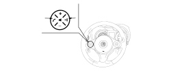

5570TO CHECK OPERATION OF VOICE RECOGNITION
- Path
- Test > 55 ELECTRICAL EQUIPMENT > 5570 ACCESSORIES > 5570T CAR RADIO/CAR TELEPHONE/VIDEO > 5570TO CHECK OPERATION OF VOICE RECOGNITION
- Kind
- test / check procedure
- Applies to
- engines: 2.2 JTS, 3.2 JTS; all production periods; only with equipment: Blue&Me
- Interactive page
- https://sloeber94.github.io/elrnDB-aBrrSpdr/en/#/946001112
Applies to: engines: 2.2 JTS, 3.2 JTS; all production periods; only with equipment: Blue&Me
CHECK TO BE PERFORMED | RESOLUTION IF THE CHECK IS NOT OK | |
|---|---|---|
1 | Press the START/STOP button (panel off). Press the voice recognition button among the steering wheel controls (lower left in the left unit) and check whether a tone can be heard indicating activation of the function | Continue as instructed in the See table N069 THE BLUETOOTH CONTROLS ON THE STEERING WHEEL DO NOT WORK |

CHECK TO BE PERFORMED | RESOLUTION IF THE CHECK IS NOT OK | |
|---|---|---|
2 | Speak the word "Help" in the langauge installed on the Bluetooth® system and check that the systems responds with a voice message | Continue as instructed in the See Test 5570TN BLUETOOTH LANGUAGE UPDATE PROCEDURE then move on to Step 7 |
3 | Press the voice recognition button to interrupt the message and say the word "Settings" in the langauge set on the Bluetooth® system and check that the system responds with a voice message | Continue as instructed in the See Test 5570TN BLUETOOTH LANGUAGE UPDATE PROCEDURE then move on to Step 7 |
4 | Press the voice recognition button to interrupt the message and say the word "Cancel" in the langauge set on the Bluetooth® system and check that the system deactivates the voice recognition | Continue as instructed in the See Test 5570TN BLUETOOTH LANGUAGE UPDATE PROCEDURE then move on to Step 7 |
5 | While the customer's phone is connected to Convergence, press the voice recognition button and say the keyword "Telephone" in the langauge set on the Bluetooth® system and check that the system responds with a voice message | Continue as instructed in the See Test 5570TN BLUETOOTH LANGUAGE UPDATE PROCEDURE then move on to Step 7 |
6 | Check how to operate the mobile phone voice recognition correctly by reading the phone user handbook. The system should work on the vehicle too if the settings are correct. The test can be considered over | The problem is inherent to the phone: the customer must contact a mobile phone service centre |
7 | Carry out Bluetooth Network Disconnection active diagnosis, then repeat the entre test and ensure it is successful | Replace the Bluetooth® control unit |
Topics linked from this page (3)
- N069 THE BLUETOOTH CONTROLS ON THE STEERING WHEEL DO NOT WORK
- 5570TN BLUETOOTH LANGUAGE UPDATE PROCEDURE
- 5570T49 BLUETOOTH ELECTRONIC CONTROL UNIT - R.R.